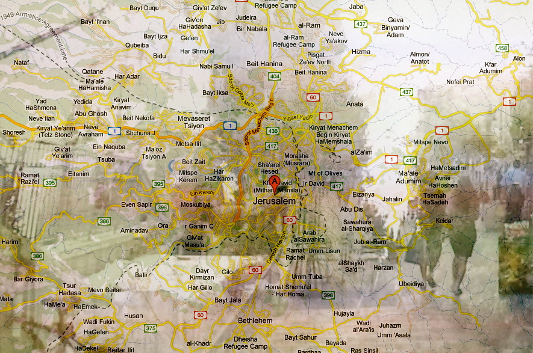

Welcome to The Dissolving Localities project where audio visual recordings of daily life are transformed into art.
Today I prepared your tours for you so all you should do is choose one tour or mix between them to see a unique perspective of Jerusalem. In the future our intent is that anyone will be able to create their own tours and share them with others.
Instructions:
choose your tour! Begin by clicking on 1 or 2 of the place markers and then click NEXT
